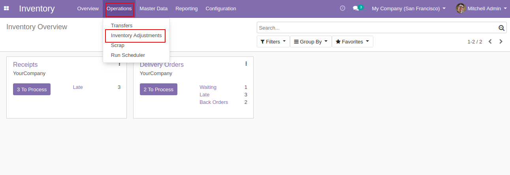
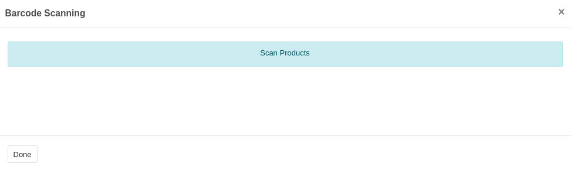
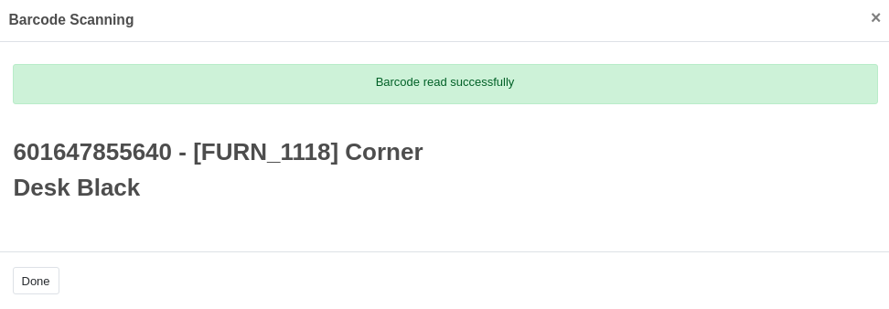
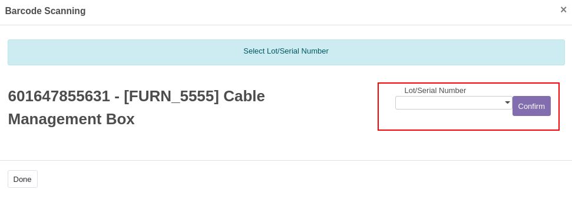
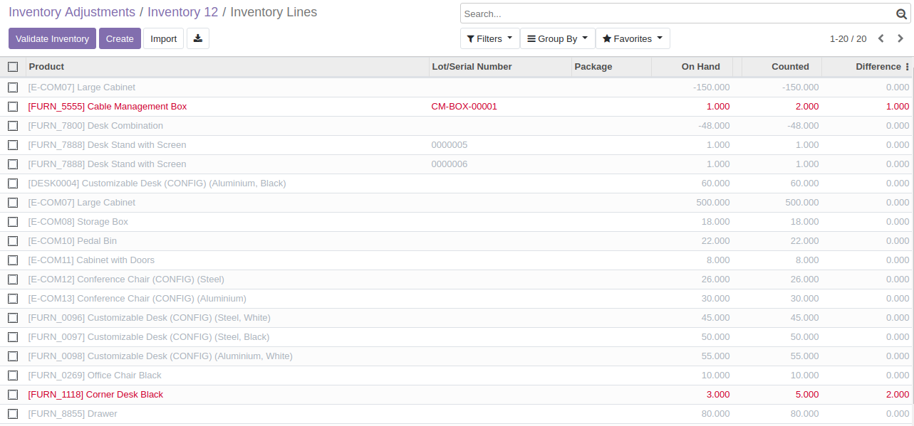
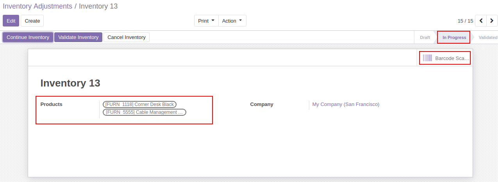
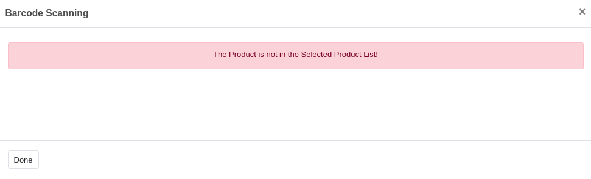

This module simplifies the stock checking procedure with the help of a barcode reader.
->Inventory ->Operations ->Inventory Adjustments -> Create an Inventory

You can use barcode scanner, only if the Inventory Adjustment stage is 'In Progress'.
Enter an Inventory Name and save the Inventory
Select the Start Inventory Button
List of All products will be available.
Go back to the inventory, to get the Barcode reader

Scan the product barcode


Enter the Lot/Serail Number in case of Lot/Serial products

You can see the values added and highlighted in the stock inventory lines
Moves will be done only for the highlighted products.

If we select products manually, then barcode only reads the product in the selected list
Count of the product will be increased
If any other products will be read, a warning message will be shown.

